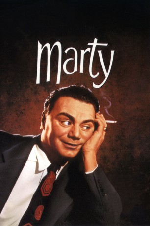
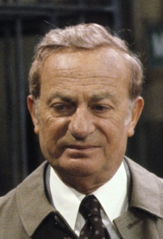

#8384 Marty
 
 IMDB-Wertung: 7.7 / 10
IMDB-Wertung: 7.7 / 10  Tomatometer: 100
Tomatometer: 100  Metascore: 0
Metascore: 0 
Marty, ein einsamer Schlachtermeister aus der Bronx, ist ein sympathischer mondgesichtiger Mann mittleren Alters, der jedoch mit seiner Einfachheit einen harten Stand bei den Frauen hat. Er sagt von sich selbst, dass, was immer es sein mag, was die Frauen an Männern mögen, er es bestimmt nicht hat. Umso nachhaltiger versucht seine Mutter ihren Sprössling unter die Haube zu bringen. Da lernt der resignierte Marty eines Abends Clara kennen, und die beiden verlieben sich auf den ersten Blick ineinander. Das scheinbar so harmonische Glück stößt jedoch überall auf Widerstand: Martys führsorgliche Mutter terrorisiert ihn mit ihrer Eifersucht und Martys Freunde erkennen Clara nicht an, weil sie dem sinnlichen Ideal der Frauen aus ihren Kitschromanen nicht entspricht. Wird Marty den Mut aufbringen die Beziehung zu Clara zu verteidigen und seiner Umwelt die Stirn zu zeigen?
Jahr: 1955
Dauer: 89 Minuten
FSK: 12
Land: USA Studio: United ArtistsTonspuren: DD2.0 - ,
Untertitel:
Auflösung: 1080p (1440x1080) Größe: 5242 MB
Genre: Drama, Liebe
Regisseur: Delbert Mann
Drehbuch: Paddy Chayefsky
Soundtrack: Roy Webb
Darsteller:
 Ernest Borgnine als Marty Piletti
Ernest Borgnine als Marty Piletti- Betsy Blair als Clara
-  Joe Mantell als Angie
- Karen Steele als Virginia
- Jerry Paris als Tommy
 John Beradino als Man in Bar (uncredited)
John Beradino als Man in Bar (uncredited)- Paddy Chayefsky als Leo (uncredited)
 John Dennis als Andy (uncredited)
John Dennis als Andy (uncredited)- Jack Klugman als Bar Patron (uncredited)
- John Milford als (uncredited)
 Jerry Orbach als Ballroom Extra (uncredited)
Jerry Orbach als Ballroom Extra (uncredited) Glenn Strange als Bit Role (uncredited)
Glenn Strange als Bit Role (uncredited)- Frank Sutton als Ralph (uncredited)
 Minerva Urecal als Mrs. Rosari (uncredited)
Minerva Urecal als Mrs. Rosari (uncredited)- Alan Wells als Jerry (uncredited)
- Esther Minciotti als Mrs. Piletti
- Augusta Ciolli als Aunt Catherine
- Joe Bell als Bit Role (uncredited)
- Nick Brkich als Bachelor (uncredited)
- Marvin Bryan als Bit Role (uncredited)
- Charles Cane als Lou - Bartender (uncredited)
- Steven Hecht als Six-Year-Old Boy (uncredited)
- Paul Hoffman als Man in Bar (uncredited)
- Walter Kelley als The Kid (uncredited)
- Doris Kemper als Bit Role (uncredited)
- Silvio Minciotti als Butcher (uncredited)
- Robin Morse als Joe (uncredited)
- Kathleen Mulqueen als Irish Lady Talking in Bar (uncredited)
- George Nardelli als Bar Patron (uncredited)
- Waclaw Rekwart als Bar Patron (uncredited)
- Edwin Rochelle als Hotel Clerk (uncredited)
- Clark Ross als Bar Patron (uncredited)
- Hal Taggart als Churchgoer Extra (uncredited)
Datei: X:\1950-1959\Marty (1955, FSK12, 1440x1080).mkv seit 28.02.2018
Festplatte: HD 1900-1970
 Es gibt insgesamt 141 Filme in der Gruppe '1950-1959'
Es gibt insgesamt 141 Filme in der Gruppe '1950-1959'